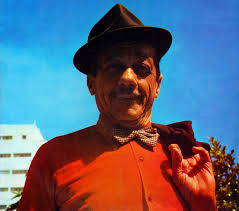
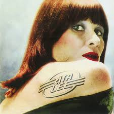

musicistas Brasileiros
Um musicista é alguém que cria, toca ou interpreta música, seja com instrumentos, voz ou tecnologia.
Pode atuar profissionalmente, como em bandas, orquestras ou estúdios, ou como amador. E irei te
mostrar os musicistas mais importante para a ciultura brasileira

Adoniran Barbosa -
BAKLAALBALLBALABAlnAN

Djavan -
BLALALBALALBABLABABA

Alcione -
BGUGUDADA